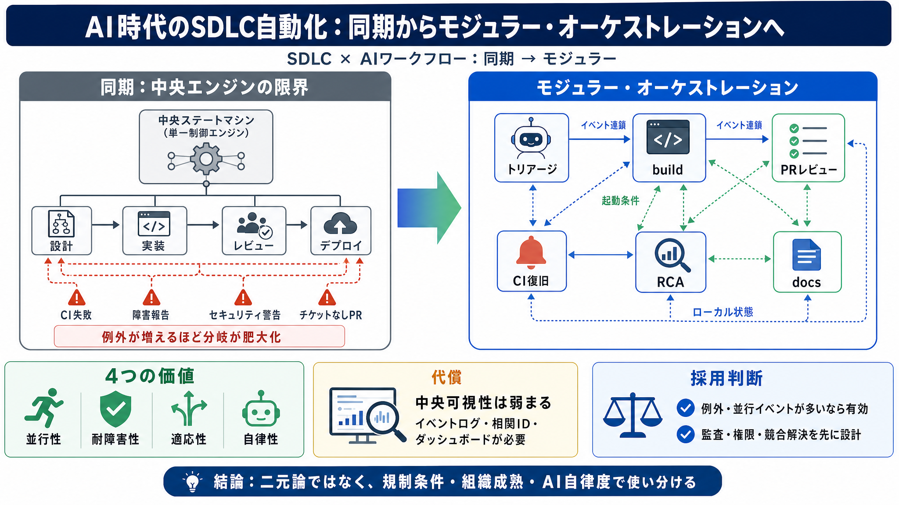

Event‑Driven Orchestration vs Workflow Engines: What We Learned While Scaling Distributed Systems
# Event‑Driven Orchestration vs Workflow Engines: What We Learned While Scaling Distributed Systems | by Raghbendra Pand…

SDLC × AIワークフロー
AIエージェントが入ると、開発は線形パイプラインではなく「イベント駆動」になる。
その前提で、SDLC自動化の設計思想を「同期」から「モジュラー・オーケストレーション」へ切り替える。
中央エンジンの限界
「設計→実装→レビュー→デプロイ」を1つの中央状態機械で同期しようとすると、例外が増えるほど破綻しやすい。
AI起動やCI失敗・障害・セキュリティ警告などで、起点と順序が絶えず変わるからだ。
同期は一本道
同期アーキテクチャは「全部の進み方を単一の順序へ押し込む」発想になりがちだ。
しかし実開発は「条件が満たされると反応する」ため、一本道は例外だらけになる。
提案：モジュラー・オーケストレーション
ワークフローを役割単位で分割し、各ワークフローが担当領域を持ってイベントに反応する。
連携は中央の「順序遷移」ではなく、イベントの“連鎖”で制御する。
どちらがAIに合う？
AIエージェントは状況に応じて必要行為を選ぶため、「次に何をするか」を中央が厳密に遷移させると矛盾が起きやすい。
モジュラーは“順序を前提で縛らない”ことで、自律的な実務挙動と整合しやすい。
得られる価値
モジュラー化で、AIが実行する複数アクション（調査→修正案→PR起票→レビュー依頼など）を自然に扱える。
その結果として、並行性・耐障害性・適応性・自律性が取りやすくなる。
代償も明確
モジュラーは中央可視性や単純な監査ビューを犠牲にしやすい。
そのため追跡（観測性）が前提になり、バグ調査も複数ワークフローにまたがる。
設計の考え方（要点）
中央で「次の手」を決め切るのではなく、各ワークフローに責務と起動条件を持たせ秩序を保つ。
遷移は“中央の法的遷移”ではなく“イベントの連鎖”として設計する。
よくある疑問
「同期とオーケストレーションの違い」「秩序は崩れないか」「規制環境では？」が判断の核心になる。
記事の立場は、分散が“秩序の実装場所”を変える、という理解だ。
批判的視点（実装の穴）
議論は概念中心で、イベント設計・冪等性・権限境界・衝突解決・監査ログ粒度・KPIなどは詳述されていない。
そのため導入判断は「観測性と安全性の設計」を読者に委ねがちになる。
結論：使い分けが要る
「方向性（イベント駆動・モジュール化）」には賛同しつつ、観測性・競合解決・監査可能性を最初から設計するのが前提。
二元論でなく、規制条件・組織成熟・AIの自律度でモデルを選ぶ。
参考（入力の範囲）
このスライドは、ユーザー提示の本文要約・論点（同期 vs オーケストレーション／モジュラー提案／FAQ／所見）を整理して作成している。
元記事のURLや固有の引用表現は入力に含まれていないため、厳密な書誌情報は付与できない。
# Event‑Driven Orchestration vs Workflow Engines: What We Learned While Scaling Distributed Systems | by Raghbendra Pand…
Event-driven architecture (also called “event choreography”) and orchestration architecture. Each has its own advantages…
... orchestration in managing distributed business processes. It further explores the scalability engineering, business-…
[Elementum](https://www.elementum.ai/) is a workflow orchestration platform designed to help enterprise teams manage pro…
26 votes, 21 comments. Hi, I am trying to understand the Event Driven Architecture (EDA), specially it's comparison with…